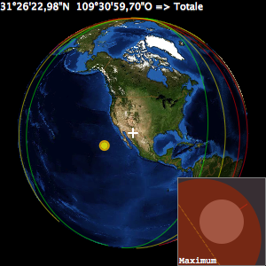
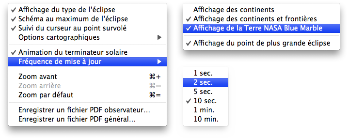

Carte de l’éclipse
Un schéma du maximum de l’éclipse depuis le lieu survolé peut être affiché dans le coin inférieur droit. Le mouvement du terminateur solaire peut aussi être affiché en temps réel.


La carte de l’éclipse n’affiche pas seulement les zones où l’éclipse est visible et la position de l’observateur, mais présente aussi les informations suivantes:
- le type de l’éclipse au lieu survolé
- une animation du terminateur solaire
- un schéma du maximum de l’éclipse depuis le lieu survolé dans le coin inférieur droit
Un menu contextuel est disponible à l’aide d’un clic droit sur la carte de l’éclipse; celui-ci vous permet de sélectionner quelques options:
- Affichage du type de l’éclipse - Affiche ou masque le type de l’éclipse depuis le lieu survolé
- Schéma au maximum de l’éclipse - Affiche ou masque le schéma du maximum de l’éclipse depuis le lieu survolé
- Suivi du curseur au point survolé - Affiche ou masque les coordonnées géographiques du curseur
-
Options cartographiques
- Affichage des continents - Affiche ou masque le contour des continents
- Affichage des continents et frontières - Affiche ou masque le contour des continents et des frontières des pays
- Affichage de la Terre NASA Blue Marble - Affiche ou masque la surface terrestre avec une image NASA Blue Marble
- Affichage du point de plus grande éclipse - Affiche ou masque le point de plus grande éclipse
- Affichage de l’échelle sur la carte - Affiche ou masque l’échelle sur la carte de l’éclipse
- Animation du terminateur solaire - Affiche ou masque l’animation du terminateur solaire
- Fréquence de mise à jour - Précise la fréquence de mise à jour de l’animation du terminateur solaire de 1 seconde à 10 minutes
- Zoom avant (⌘+) - Zoom avant d’un facteur 2
- Zoom arrière (⌘-) - Zoom arrière d’un facteur 2
- Zoom par défaut (⌘=) - Réinitialise le niveau de zoom à sa valeur par défaut
- Enregistrer une carte PDF orthographique observateur… - Permets la création d’un fichier PDF en couleur et haute résolution contenant le diagramme de l’éclipse ainsi qu’une carte en projection équirectangulaire des zones de visibilité de l’éclipse depuis le lieu de l’observateur.
- Enregistrer une carte PDF orthographique générale… - Permets la création d’un fichier PDF en couleur et haute résolution contenant le diagramme de l’éclipse ainsi qu’une carte en projection équirectangulaire des zones de visibilité de l’éclipse.
Pour réduire l’activité du processeur et donner la priorité au processus de prise de photographies tout en maximisant l’autonomie de votre portable, vous pouvez désactiver ou réduire la fréquence de mise à jour des animations du diagramme Lune-Ombre/Pénombre Terrestre et de la carte de l’éclipse.
|